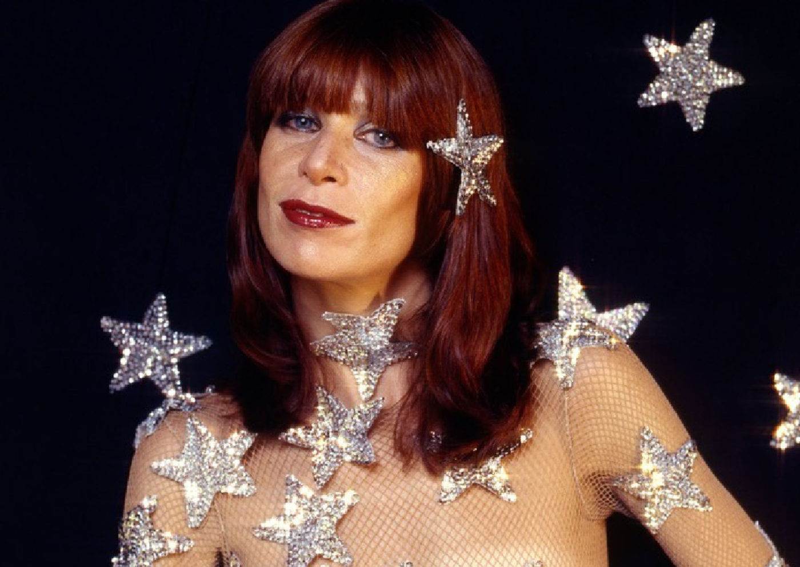
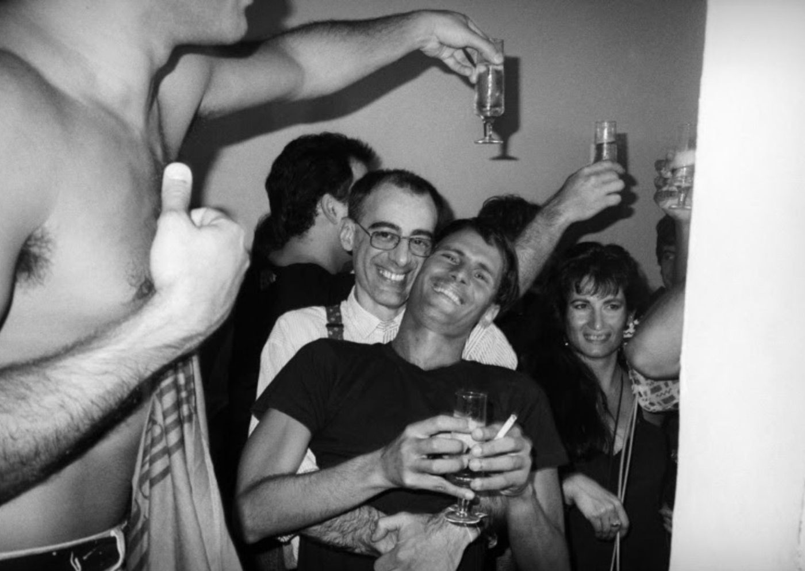

Exposição fotográfica com imagens de Gal Costa, Rita Lee e Cazuza chega ao IMS

Vânia Toledo costumava invadir os bastidores de teatros e shows com sua câmera a tiracolo e fazer diversos registros de artistas em momentos descontraídos, e curtindo a companhia uns dos outros. Vânia começou sua carreira fotografando gratuitamente atores que precisavam de materiais de divulgação. Posteriormente, documentou espetáculos marcantes da história do teatro brasileiro, encenados durante a ditadura militar, como a montagem de Macunaíma.
Em seu estúdio, também retratou nomes centrais da música e do teatro nacional, convidando-os a posar e se abrir para suas lentes. Essa proximidade com as pessoas fotografadas e com as cenas que captava — “meu vício é gente”, declarava em entrevistas — caracterizam a obra e a carreira de Vânia.
A coleção é composta por cerca de 250 mil imagens, sobretudo retratos em preto e branco, além de reportagens em jornais e revistas, livros e documentos, como credenciais de imprensa. Com a aquisição, o IMS passa a ter direito de fazer exposições e publicações para divulgar a obra de Toledo. Já os direitos autorais permanecem com Juliano Toledo, filho e herdeiro da fotógrafa.

No acervo, há retratos de Gal Costa, Ney Matogrosso, Caio Fernando Abreu, Rita Lee, Cazuza, Pelé, Milton Nascimento, José Celso Martinez Corrêa e Caetano Veloso, além de registros da vida noturna de São Paulo nos anos 1980. Outro destaque é a série pioneira de nus masculinos que deu origem ao livro Homens: ensaio (1980), com personagens famosos e menos conhecidos.